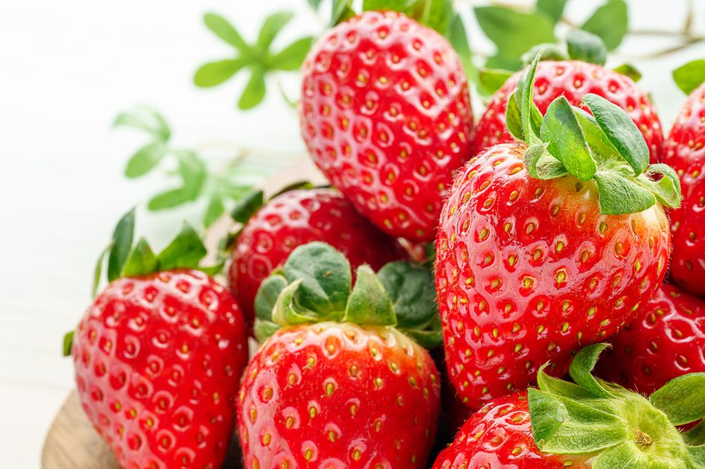
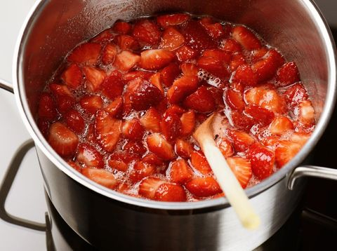

Resep Selai Stroberi Rumahan
Kamis, 27 Agu 2020 10:00 WIBSelai stroberi yang rasanya asam manis enak dioleskan pada roti atau es krim. Daripada membeli, mumpung sedang musim kamu bisa bikin sendiri.
Di pasaran a da beragam selai stroberi. Ada yang bentuknya halus kental seperti jelly, tetapi ada juga yang masih terlihat cacahan stroberinya. Rasanya ada yang manis kuat ada juga yang asam segar.
Buah stroberi sendiri dikenal sebagai salah satu buah yang kaya akan vitamin C. Juga buah yang paling populer dibuat selai atau jam. Baik berupa buah stroberi saja maupun dicampur dengan buah lain.
Kali ini chef Martin Praja melalui tayangan Masak Masak yang ditayangkan di Trans TV setiap hari Sabtu dan Minggu jam 13.30, berbagi resep selai stroberi untuk pemirsa yang meminta tips. Berikut ini resep dan tipsnya.
Selai Stroberi Rumahan
Bahan:
500 g buah stroberi segar
150 g gula pasir
1 buah jeruk lemon, ambil airnya
200 ml air
Resep Selai Stroberi Rumahan Foto: iStock |
Cara membuat:
• Bersihkan tangkai buah stroberi lalu cuci bersih di bawah air mengalir dan tiriskan.
• Belah buah stroberi menjadi dua atau empat bagian.
• Masukkan buah stroberi dalam panci.
• Panaskan dengan api sedang lalu tambahkan gula pasir.
• Masak hingga gula mulai melelh.
• Tambahkan air jeruk lemon dan air lalu kecilkan api.
• Masak hingga stroberi lunak dan gula mulai sedikit kecokelatan dan kental.
• Angkat dan dinginkan.
• Masukkan selai dalam wadah/stoples bersih dan kering.
• Tutup rapat, simpan dalam suhu ruangan atau dalam lemari es agar tahan lebih lama.
Untuk 500 gram
Resep Selai Stroberi Rumahan Foto: iStock |
Tips:
• Untuk membuat selai stroberi gunakan buah stroberi yang utuh dan masak. Ditandai dengan warna merah merata dan tidak ada bagian yang rusak atau busuk. Jika buah stroberi kurang masak, selai akan sangat asam rasanya.
• Sebelum dipakai, pastikan wadah yang bersih dan kering. Jika perlu rebus atau kukus dulu wadah agar benar-benar bersih.
• Agar tahan lebih lama, simpan selai stroberi dalam wadah kedap udara dan taruh di lemari es.
Simak Video "Masak Masak: Resep Selai Stroberi Rumahan"
[Gambas:Video 20detik]
(odi/odi)